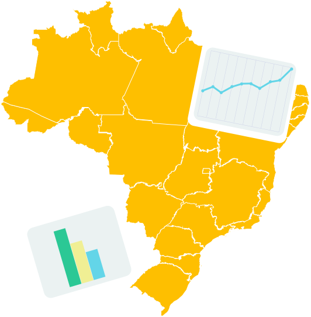

A primeira iniciativa de fomento para abertura de dados governamentais se deu a partir do Plano de Ação Nacional sobre Governo Aberto (Decreto s/nº de 15 de setembro de 2011), criado para incremento da transparência e do acesso à informação pública. As medidas estavam respaldadas na Constituição Federal, a qual estabelece que a administração pública tem a responsabilidade de fazer a gestão da documentação governamental e viabilizar o acesso dos usuários a registros administrativos e a informações sobre atos de governo.
Série 3 | Curso 1
Acesso Aberto
Aula 1
O Que é o Acesso Aberto?
Seja bem-vindo ao curso sobre Acesso Aberto!
Esta série apresenta um pouco da história do movimento do acesso aberto e suas implicações na comunicação cientifica.
Você conhecerá um pouco mais sobre principais conceitos, marcos históricos, diferentes formas de aplicação e diversas iniciativas tanto no panorama internacional como experiências nacionais.
Aproveite o conteúdo e bons estudos!
Vamos descobrir o que é acesso aberto?
O que é acesso aberto?
O Acesso Aberto:
tem o poder de transformar a maneira como a pesquisa e a investigação científica são conduzidas. Possui implicações diretas e amplas para as esferas acadêmica, médica, científica, industrial, e para a sociedade como um todo
ABOUT, 2014
Para que você possa refletir sobre esse assunto, veja o vídeo abaixo:
Vídeo 1 - RCAAP - O poder do acesso aberto
Fonte: DALI.
Conseguiu compreender pelo vídeo o potencial que o Acesso Aberto pode ter?
Porém, é importante que você saiba de onde surgiu tudo isso:
A iniciativa de Acesso Aberto de Budapeste (Budapest Open Access Initiative - BOAI (BUDAPEST, 2002)) tornou o Acesso Aberto como o acesso totalmente irrestrito e gratuito a literatura acadêmica revisada por pares e disponível no mundo por parte de qualquer cientista, acadêmico, professor, estudante ou outro interessado, desfazendo as barreiras que impedem o acesso a esta literatura. Outro ponto importante, é a Declaração de Budapeste que estabelece duas estratégias para viabilizar o acesso aberto, a Via Verde e a Via Dourada, veja abaixo o que significa:
Saiba mais:


A decisão de partir para o Acesso Aberto nasceu das primeiras iniciativas de compartilhamento de artigos científicos como as da biblioteca CiteSeer, na década de 1980 e do Arxiv em 1991, passando pela Proposta Subversiva de Harnad, em 1994, publicada posteriormente pela Association of Research Libraries e as declarações da Comunidade Científica em prol do Acesso Aberto aos artigos científicos: Budapest Open Access Initiative - BOAI , 2002, a Berlin , em 2003 e a Bethesda , também em 2003, tem multiplicado o número de repositórios, ampliando a visibilidade e o acesso aos resultados da pesquisa em forma de artigo. É notório o avanço na ampliação do acesso aos artigos científicos (que ainda tem um longo caminho a percorrer até alcançar os propósitos de abertura preconizados na BOAI3).
O Acesso Aberto, então, se iniciou de fato em 1991, quando o físico Paul Ginsparg, utilizando as Tecnologias da Informação e Comunicação (TICs), criou o ArXiv, primeiro arquivo de preprints, em Los Alamos National Laboratory (VAN DE SOMPEL; LAGOZE, 2000). Esse repositório foi fruto da mobilização da própria comunidade de Física que sentiu a necessidade de criar um ambiente que facilitasse a distribuição de seus trabalhos entre os pares. Cabe ressaltar que na área de Física o compartilhamento de informações já era comum por outros meios, como o correio eletrônico, o que aponta uma mudança de suporte, mas não de comportamento. A partir desta iniciativa, “pesquisadores passaram a criar arquivos eletrônicos de preprints e posprints” (MARCONDES et al., 2005, p. 43). Esses arquivos foram denominados open archives, uma das primeiras designações do que hoje se conhece por repositório. Desde então as comunidades científicas vêm criando repositórios de eprints.
Saiba mais:
Repositórios, Classificações e Terminologias
Os repositórios podem ser classificados como: Governamentais, Agregadores, Temáticos ou Institucionais. Veja abaixo mais detalhes sobre cada um deles:
Os repositórios governamentais, representam toda a base de dados que armazenam registros de uma determinada organização governamental.
Fonte: Kuramoto.
Tipo de repositório que reúne registro de outros repositórios.
Os
Repositório institucional (RI) é o conjunto de serviços que uma instituição oferece aos membros de sua comunidade para a gestão e disseminação da produção criada pela instituição e seus membros (LYNCH, 2003). Segundo o Instituto Brasileiro de Informação em Ciência e Tecnologia (IBICT), repositórios institucionais se configuram como sistemas de informação que armazenam, preservam, divulgam e dão acesso à produção intelectual de comunidades universitárias. Ao fazê-lo, intervêm em duas questões estratégicas: contribuem para o aumento da visibilidade e o “valor” público das instituições, servindo como indicador tangível da sua qualidade; permitem a reforma do sistema de comunicação científica, expandindo o acesso aos resultados da investigação e assumindo o controle acadêmico sobre a publicação científica (REPOSITÓRIO, 2007).
Fonte: OPENDOAR, 2014.
Saiba mais:
Conclusão

Nesse curso você observou sobre como tudo começou para o Acesso Aberto no mundo. Lembrando que o Acesso Aberto é uma forma de se realizar pesquisa, que traz implicações, além de impactos muito práticos para a vida cotidiana e da ciência.
Você também aprendeu sobre os diferentes tipos de repositórios, como os: Governamentais, Agregadores, Temáticos ou Institucionais, além de conseguir identificar as características de cada um deles!
Agora, você concluiu essa aula e esperamos vê-lo em breve na aula 2. Bom trabalho!